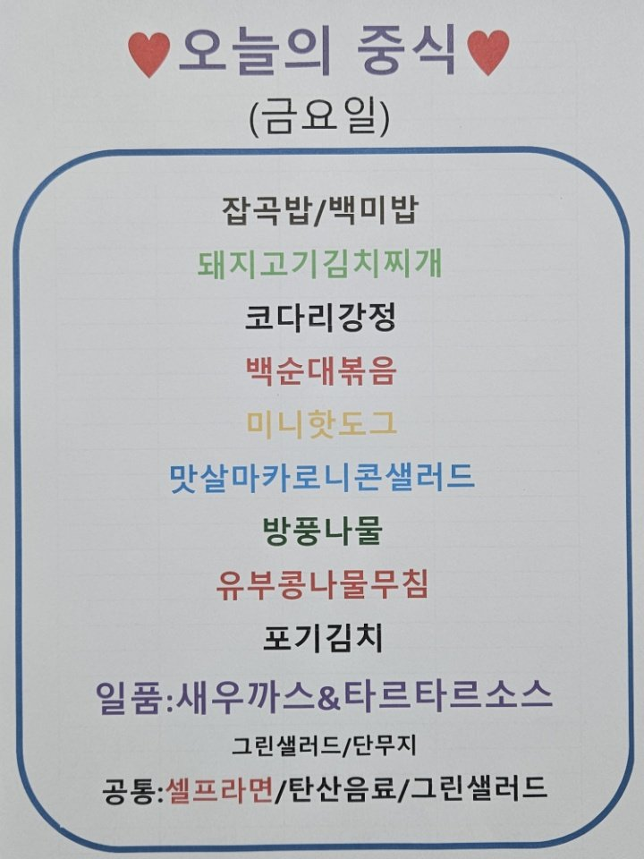

2층

옆집
📝
업데이트: 실제로 메뉴 이미지가 바뀐 시각입니다.
최근확인: 메뉴 이미지가 있는지 마지막으로 확인한 시각입니다.
최근확인: 메뉴 이미지가 있는지 마지막으로 확인한 시각입니다.
ℹ️
메뉴 이미지는 평일 오전 10시부터 13시 사이에 자동 업데이트됩니다.
ℹ️
출처 이미지 업로드가 이루어지지 않을 경우, 업데이트가 되지 않을 수 있습니다.
ℹ️
이미지 업로드 지연으로 인해 이전 메뉴가 남아 있을 수 있으니, 업데이트 상태를 꼭 확인해주세요.
🛠️
간혹 브라우저에 저장된 캐시 때문에 화면이 이상하게 보일 수 있습니다. 그럴 땐 페이지를 새로고침(Ctrl + Shift + R) 해주세요.
🌐 2층 (에이스굿푸드): https://pf.kakao.com/_xdxagIn
📎 옆집 (오늘의 밥상): https://blog.naver.com/skfoodcompany
📌 오늘의 메뉴 ver1
매번 링크 찾아 들어가는 게 번거로워서 제작하게 되었습니다.
주말 동안 공부도 할 겸, 심심해서 만들어봤습니다.
귀차니즘이 조금이나마 덜어졌으면 좋겠습니다.
제작일: 2025.04.19
👨💻 made by SWJ
피드백은 언제나 환영입니다. 👋